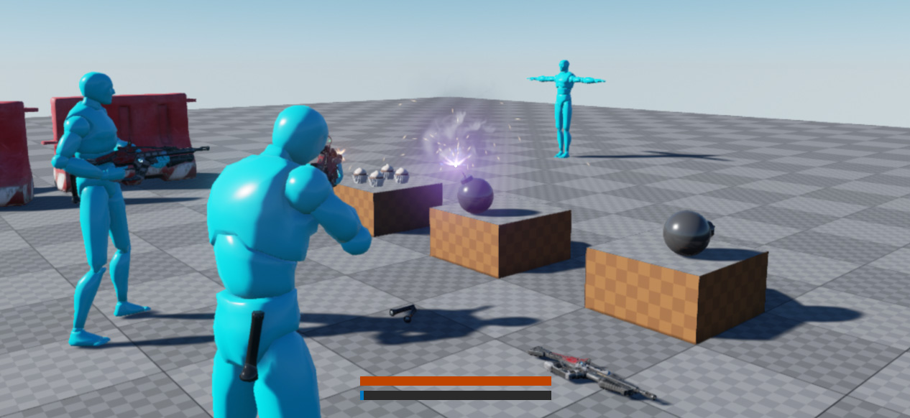
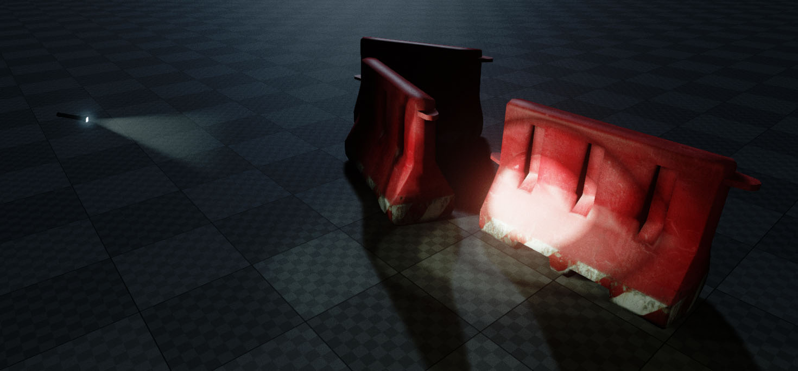
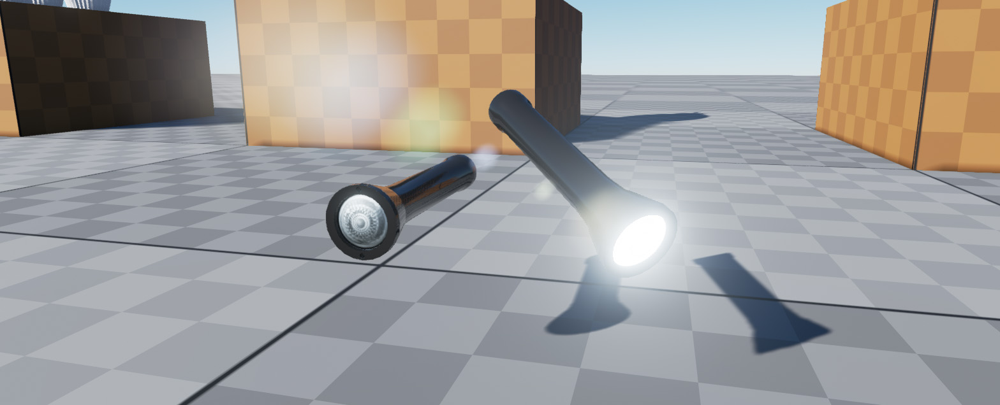
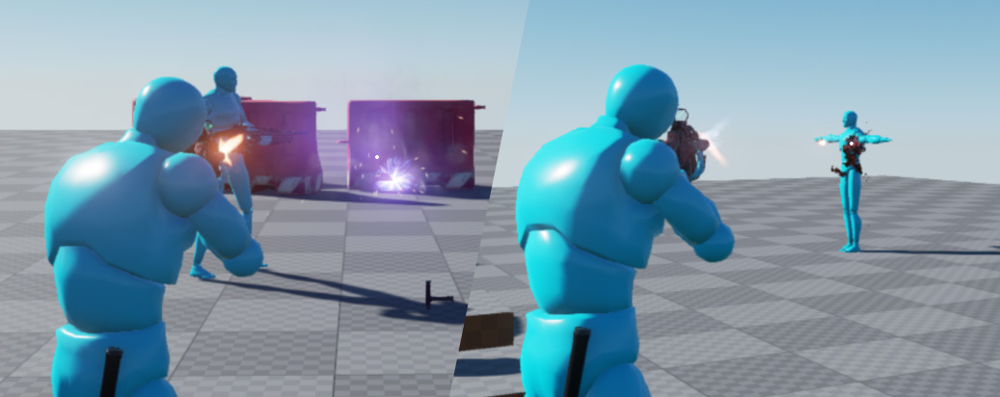
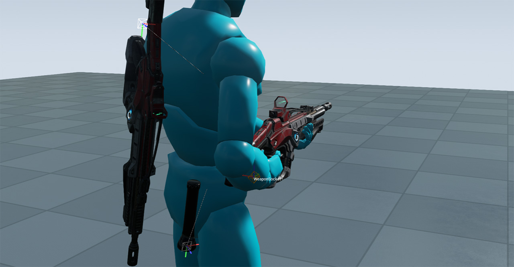
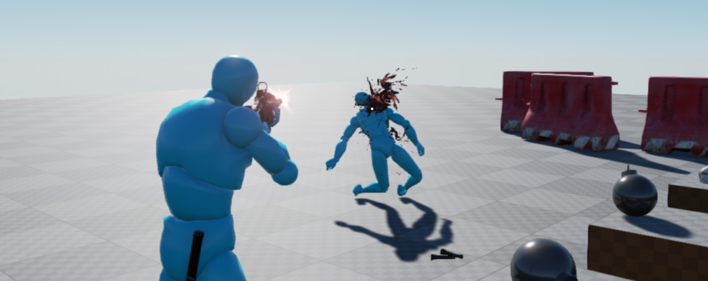

Survival Sample Game: Section 2
Be sure to first read the for information on the project series, recommended documentation and a section overview! The best place for questions and feedback is the official forum thread , it is monitored (the community is often kind enough to help out too!) and will try to answer any question as quickly as possible.
Contents
Introduction
This section adds weapon support for the character, a flashlight, UT-style inventory with on-character visual representation of the carried items and deals with damage, death and respawns for players.
Please consider this documentation a reference guide to get additional information on topics covered in the sample game's source itself. If you are missing a topic or think a specific topic requires more details then feel free to leave your feedback on the section-specific forum thread !


View & download latest project source on GitHub
Additional concepts introduced in code
- Arrays (See: SCharacter.h - Inventory)
- Structs (See: STypes.h - FTakeHitInfo)
- Enums (See: STypes.h - EInventorySlot)
<youtube> https://www.youtube.com/watch?v=UHPAmfHlYOA
Concepts
Manipulating materials in C++

To alter a single object's material during gameplay we have to create a MaterialInstanceDynamic . This gives us a unique instance to change parameters like the flashlight brightness.
First we create the instance. Any new instance must be applied to the mesh, CreateAndSetMaterialInstanceDynamic takes care of both. The first parameter for the material index is usually 0 - your StaticMesh may have more than one material applied using multiple indices (see the Weapons/SK_Rifle mesh for an example)
void ASFlashlight::BeginPlay()
{
Super::BeginPlay();
/* Create an instance unique to this actor instance to manipulate emissive intensity */
USkeletalMeshComponent* MeshComp = GetWeaponMesh();
if (MeshComp)
{
MatDynamic = MeshComp->CreateAndSetMaterialInstanceDynamic(0);
}
}
If you didn't create this MaterialInstanceDynamic, changing a parameter on a material, would change it on all meshes that use the same material since by default instances of the same materials are shared between meshes.
Now that we have a material to play around with, we can update the brightness of our flashlight like so:
void ASFlashlight::UpdateLight(bool Enabled)
{
/* Update material parameter */
if (MatDynamic)
{
/* " Enabled ? MaxEmissiveIntensity : 0.0f " picks between first or second value based on "Enabled" boolean */
MatDynamic->SetScalarParameterValue(EmissiveParamName, Enabled ? MaxEmissiveIntensity : 0.0f);
}
}
The EmissiveParamName contains the FName of the parameter, in this case "Brightness".
The second parameter field may look strange to you, here is a code snippet to explain what it does:
/* This line is a shorthand for the if-statement below */
Enabled ? MaxEmissiveIntensity : 0.0f
float Intensity;
if (Enabled)
{
Intensity = MaxEmissiveIntensity;
}
else
{
Intensity = 0.0f;
}
Driving FX with Physical Materials

To spawn particle FX based on the surface we hit, or play a sound based on the surface we standing on we need to know the PhysicalMaterial of a StaticMesh or SkeletalMesh. For StaticMesh this is specified in the shader material in the MaterialEditor, for SkeletalMeshes it's set using the PhatTool on the PhysicsAsset assigned to the SkeletalMesh.
You need to define your own custom Physics Material first. (See: SurvivalGame.h) Default already exists, but for convenience we assign a C++ definition to it. Don't forget to add them to DefaultEngine.ini or the engine won't recognize the types (the C++ code below is only for convenience, the .ini file it where the actual defining is done)
/** when you modify this, please note that this information can be saved with instances
* also DefaultEngine.ini [/Script/Engine.PhysicsSettings] should match with this list **/
#define SURFACE_DEFAULT SurfaceType_Default
#define SURFACE_FLESH SurfaceType1
We assign these types to PhysicalMaterial assets. (See: '/Base/PhysMat_Flesh') And the assets are then applied to either (shader) materials or PhysicsAsset (See: '/AnimStarterPack/Character/HeroTPP_Physics')
Now there is one step remaining, our code needs to check the type we hit, and spawn a particle effect, or play a sound based on what we just hit. (See: SImpactEffect.cpp)
void ASImpactEffect::PostInitializeComponents()
{
Super::PostInitializeComponents();
/* Figure out what we hit (SurfaceHit is setting during actor instantiation in weapon class) */
UPhysicalMaterial* HitPhysMat = SurfaceHit.PhysMaterial.Get();
EPhysicalSurface HitSurfaceType = UPhysicalMaterial::DetermineSurfaceType(HitPhysMat);
UParticleSystem* ImpactFX = GetImpactFX(HitSurfaceType);
if (ImpactFX)
{
UGameplayStatics::SpawnEmitterAtLocation(this, ImpactFX, GetActorLocation(), GetActorRotation());
}
USoundCue* ImpactSound = GetImpactSound(HitSurfaceType);
if (ImpactSound)
{
UGameplayStatics::PlaySoundAtLocation(this, ImpactSound, GetActorLocation());
}
}
The SurfaceHit variable is applied by SWeaponInstant.cpp.
void ASWeaponInstant::SpawnImpactEffects(const FHitResult& Impact)
{
if (ImpactTemplate && Impact.bBlockingHit)
{
/* This function prepares an actor to spawn, but requires another call to finish the actual spawn progress. This allows manipulation of properties before entering into the level */
ASImpactEffect* EffectActor = GetWorld()->SpawnActorDeferred<ASImpactEffect>(ImpactTemplate, Impact.ImpactPoint, Impact.ImpactPoint.Rotation());
if (EffectActor)
{
EffectActor->SurfaceHit = Impact;
UGameplayStatics::FinishSpawningActor(EffectActor, FTransform(Impact.ImpactNormal.Rotation(), Impact.ImpactPoint));
}
}
}
We retrieved this surface information by performing a ray-trace with bReturnPhysicalMaterial = true. (See: SWeapon.cpp)
FHitResult ASWeapon::WeaponTrace(const FVector& TraceFrom, const FVector& TraceTo) const
{
FCollisionQueryParams TraceParams(TEXT("WeaponTrace"), true, Instigator);
TraceParams.bTraceAsyncScene = true;
TraceParams.bReturnPhysicalMaterial = true;
FHitResult Hit(ForceInit);
GetWorld()->LineTraceSingle(Hit, TraceFrom, TraceTo, COLLISION_WEAPON, TraceParams);
return Hit;
}
Attaching/Detaching Actors using Sockets

Sockets are great for creating your own attach points on skeletal meshes. To use a socket in C++ you must know the name of the socket as specified through the Skeletal Mesh Editor. See the Docs on how to setup and name Sockets .
In this project we are using it for a couple of things. To attach a weapon to our character's hands, back and pelvis and on the weapon mesh to define the muzzle location. You can use it for many other things too, such as spawning particle FX on your jetpack.
In the code snippet below we retrieve an FName for the slot we wish to attach our weapon to. The AttachTo() function doesn't require you to specify a Bone or Socket, if you omit this value, it will use the root (or pivot) instead.
void ASWeapon::AttachMeshToPawn(EInventorySlot Slot)
{
if (MyPawn)
{
// Remove and hide
DetachMeshFromPawn();
USkeletalMeshComponent* PawnMesh = MyPawn->GetMesh();
FName AttachPoint = MyPawn->GetInventoryAttachPoint(Slot);
Mesh->SetHiddenInGame(false);
Mesh->AttachTo(PawnMesh, AttachPoint, EAttachLocation::SnapToTarget);
}
}
Detaching is even simpler:
void ASWeapon::DetachMeshFromPawn()
{
Mesh->DetachFromParent();
Mesh->SetHiddenInGame(true);
}
Dealing & handling damage

The engine already have a base framework to support damage. If you're new to Unreal Engine, check out the blog post on Damage in UE4 .
An example on dealing damage to an Actor is available in SWeaponInstant.cpp (Note that Actor already includes the function TakeDamage() ) We override and extend this function in our SCharacter.cpp to update Hitpoints and handle death.
void ASWeaponInstant::DealDamage(const FHitResult& Impact, const FVector& ShootDir)
{
FPointDamageEvent PointDmg;
PointDmg.DamageTypeClass = DamageType;
PointDmg.HitInfo = Impact;
PointDmg.ShotDirection = ShootDir;
PointDmg.Damage = HitDamage;
Impact.GetActor()->TakeDamage(PointDmg.Damage, PointDmg, MyPawn->Controller, this);
}
Another way to deal damage is through UGameplayStatics::ApplyRadialDamage (variations exist like ApplyPointDamage and ApplyRadialDamageWithFalloff) The SBombActor uses it to apply damage to anything within the explosion radius.
void ASBombActor::OnExplode()
{
if (bExploded)
return;
// Notify the clients to simulate the explosion
bExploded = true;
// Run on server side
SimulateExplosion();
// Apply damage to player, enemies and environmental objects
TArray<AActor*> IgnoreActors;
UGameplayStatics::ApplyRadialDamage(this, ExplosionDamage, GetActorLocation(), ExplosionRadius, DamageType, IgnoreActors, this, nullptr);
}
You can specify your own DamageTypes in content and deal with different types individually (eg. ExplosionDamage, FallDamage etc.) and have each type specify different magnitudes of impulse, if any.
Closing
In this section we've added the basics for our gameloop. In the upcoming sections we will introduce enemies and game objective to put all this to use. If you are confused on a particular feature that was covered, feel free to ask about it in the official section 2 thread for this project.
- -